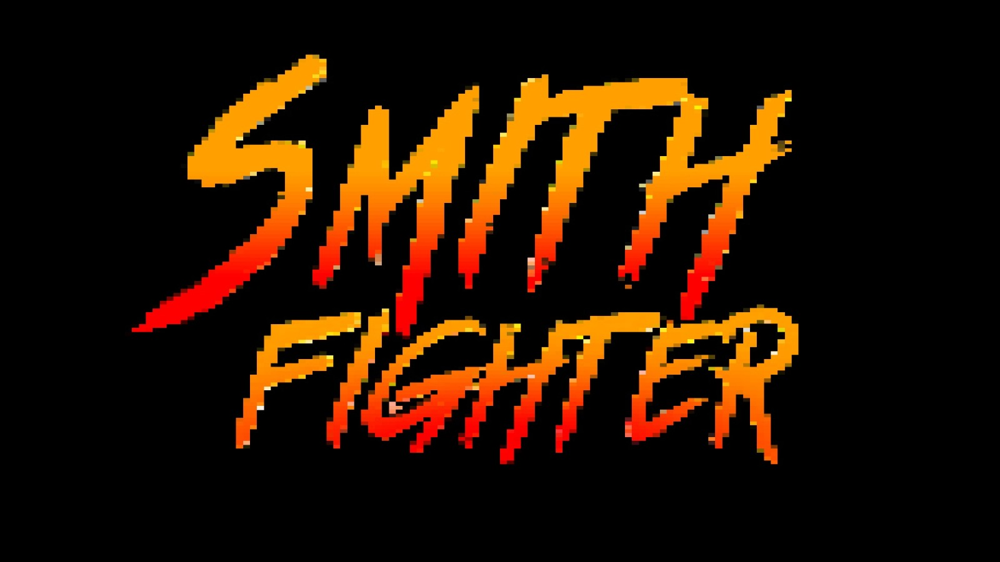
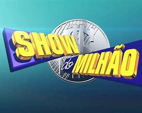

Meus Projetos
Projeto 1: jogo feito no construct 3
Com a observação do fato que, no dia da formação do grupo responsável por esse projeto, todos os integrantes do grupo vestiam preto, nos tornamos MIB, e já que escolhemos esse nome, por que não fazer um jogo de luta do will smith, então assim nasceu: smith fighter
Projeto 2: aplicativo multimídia: show do milhão
Nosso aplicativo multimídia acabou se tornando um jogo inspirado no show do milhão com 300 perguntas chamadas aleatoriamente, divertido, mas ainda assim, com alguns bugs
Projeto 3: página web
O projeto três envolve a criação de um site em contribuição pública a toda a região metropolitana de Curitiba, nossa contribuição foi para a parte de exposições presentes nessa área.